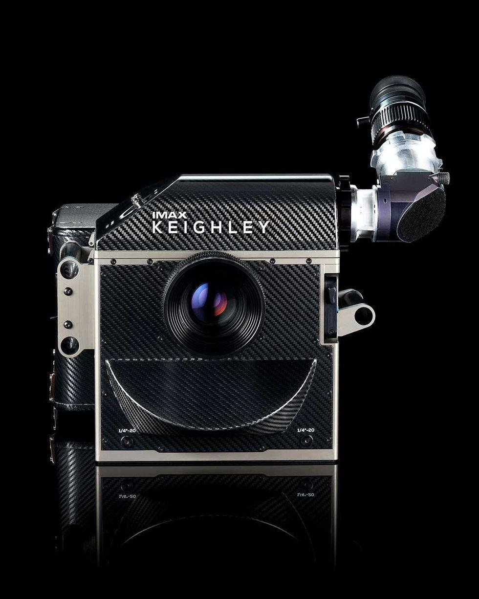
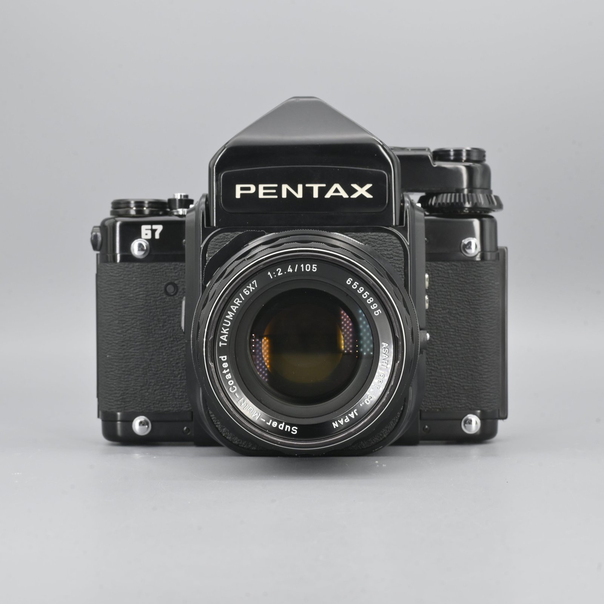
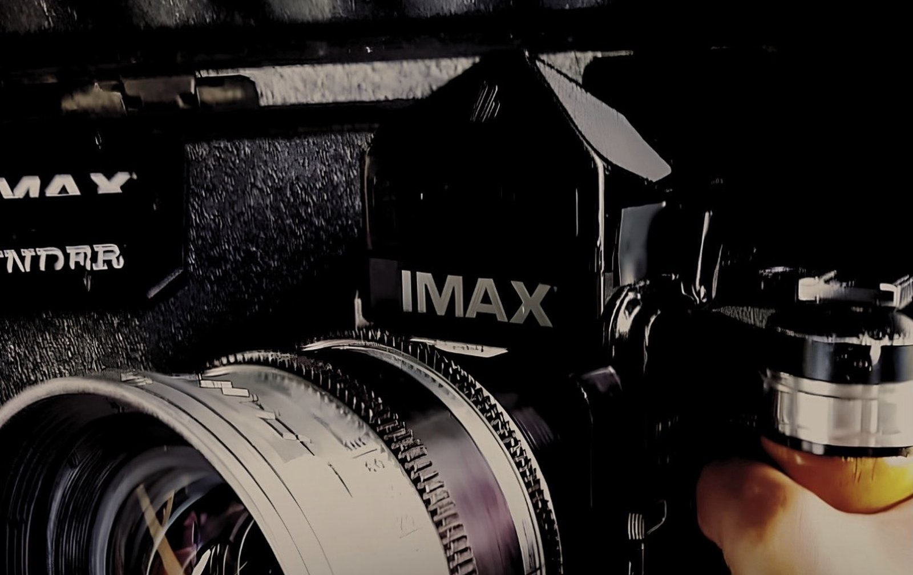
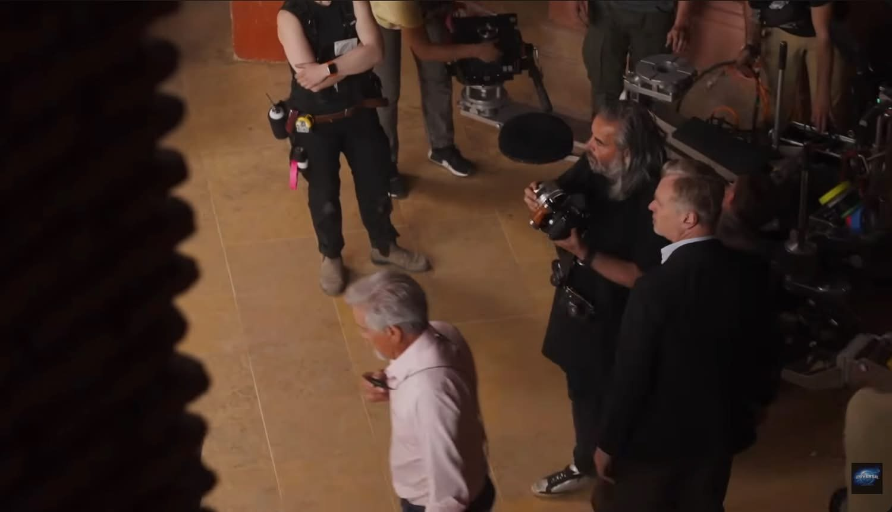
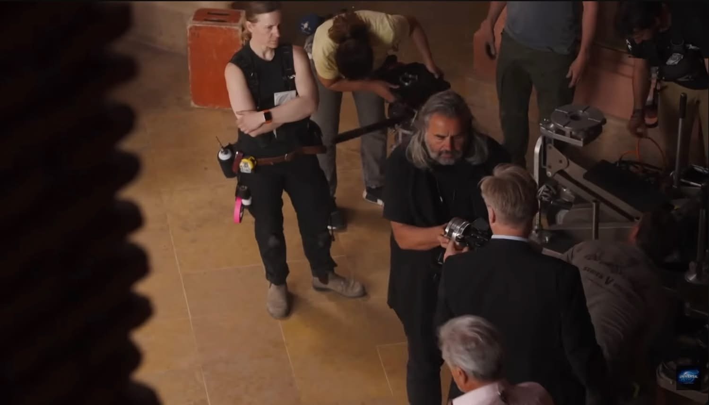

필름을 넣지 않고, 사진도 찍지 않는다. 그런데 촬영 현장에서 가장 먼저 쓰이는 카메라다.
크리스토퍼 놀란의 촬영 현장 사진을 보다 보면 이상한 물건이 하나 눈에 걸린다. 거대한 영화 카메라들 사이에서 정작 감독이 눈에 대고 있는 건 검은 중형 필름 카메라다. 자세히 보면 바디에 IMAX 로고가 붙어 있다. 펜탁스 67이다.
300파운드 옆의 작은 카메라

지난 7월 개봉한 《오디세이》는 전편을 IMAX 필름으로 찍은 첫 장편이다. 이를 위해 IMAX 는 새 카메라를 만들었다. 이름은 Keighley. 반세기 넘게 IMAX 의 화질을 책임진 데이비드 키글리와 아내 퍼트리샤의 이름을 땄다. 《오펜하이머》 이후 2년을 들여 개발했고, 모터 소음을 잡아 대사 동시녹음이 가능해졌다.
카메라 본체만 보면 그리 무겁지 않다. 액세서리를 달고 1000피트 필름까지 넣어 25kg 남짓. 문제는 대사 장면이다. 모터 소리를 완전히 죽이려면 방음 블림프에 넣어야 하는데, 이 상자 하나가 240파운드다. 다 합치면 300파운드, 약 136kg. 강화 철판을 댄 돌리에 올려야 하고, 자리를 옮기려면 여섯 명 넘는 인원이 붙는다.
그런데 감독은 촬영 전에 프레임을 봐야 한다. 이 앵글이 맞는지, 이 렌즈가 맞는지, 인물이 화면 어디에 놓이는지. 그때마다 136kg 짜리 리그를 끌고 다닐 수는 없다.
왜 하필 펜탁스 67인가

이유는 비율이다. 펜탁스 67의 네거티브는 56×70mm, 비율로는 약 1.25:1이다. IMAX 15/70 필름의 화면비는 1.43:1. 완전히 같지는 않지만, 시중의 어떤 스틸 카메라보다 IMAX 의 정사각형에 가까운 화면이다. 3:2로 길쭉한 35mm 카메라로는 IMAX 의 프레임을 짐작할 수 없다.
IMAX 가 손댄 부분
IMAX 는 이 카메라를 그대로 쓰지 않았다. 사진을 찍을 필요가 없으니 포컬플레인 셔터 어셈블리를 들어냈고, 대신 커스텀 플랜지 어댑터를 달았다. 이 어댑터 덕분에 감독과 촬영감독은 실제 촬영에 쓰는 시네·IMAX 렌즈를 이 작은 바디에 그대로 물릴 수 있다.

포커싱 스크린에는 15/70 IMAX 프레임 라인을 새겼다. 파인더를 들여다보면 실제 IMAX 화면이 어디서 잘리는지가 그대로 보인다. 필름을 넣지 않은 카메라, 사진을 찍지 않는 카메라. 오직 보기 위한 카메라다.
현장에서는 이렇게 쓴다
쓰는 방식은 단순하다. 세트가 준비되면 감독이 카메라를 들고 배우 앞으로 간다. 눈에 대고, 몸을 움직여 각도를 찾고, 렌즈를 바꿔 끼워 본다. 여기다 싶으면 그제야 무거운 본 카메라를 그 자리로 옮긴다.


감독과 촬영감독이 같은 파인더를 번갈아 들여다보는 장면이 자주 나온다. 모니터 앞에 둘러서서 화면을 가리키는 것과는 다른 대화다. 한 사람이 본 것을 다른 사람이 같은 자리에서 같은 눈높이로 확인한다.
놀란만의 발명은 아니다
이 방식이 놀란에게서 시작된 건 아니다. IMAX 촬영감독 제임스 네이하우스(ASC)에 따르면, IMAX 마운트를 단 펜탁스 6×7 을 디렉터스 뷰파인더로 쓰는 건 업계에서 오래된 관행이다. 개조하기 전에는 실제로 필름을 넣어 스틸까지 함께 찍기도 했다.
최신 기술이 아니라 수십 년 이어져 온 현장의 방식이라는 뜻이다. 디지털 모니터가 아무리 좋아져도, 눈에 대고 보는 광학 파인더를 대신하지 못하는 순간이 있다.
눈에 대고 보는 일
디지털 시대의 촬영 현장에는 모니터가 넘친다. 감독은 의자에 앉아 화면을 본다. 그런데 세상에서 가장 거대한 포맷을 다루는 감독이, 정작 프레임을 정할 때는 반세기 전 필름 카메라를 눈에 댄다.
카메라를 얼굴에 붙이고 몸을 움직여 앵글을 찾는 일. 필름 사진을 찍는 사람이라면 익숙한 동작이다. 놀란이 든 그 펜탁스에는 필름조차 들어 있지 않지만, 그가 하는 일은 우리가 주말에 카메라를 들고 나가서 하는 것과 같다. 눈에 대고, 프레임을 정하고, 여기다 싶을 때까지 기다리는 것.
136kg 짜리 카메라로 찍는 영화의 프레임이, 손에 드는 필름 카메라 하나에서 정해진다. 이 순서가 오래 마음에 남는다.